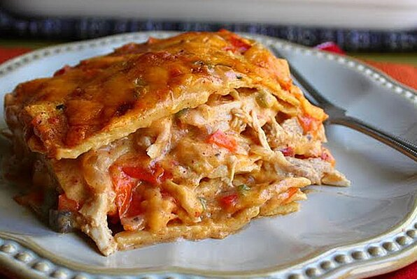

King Ranch Chicken Casserole

Description
Casserole made of chicken
Ingredients
- 1 tablespoon vegetable oil
- 1 white onion, diced
- 1 red bell pepper, diced
- 1 green bell pepper, diced
- 1 (10.75 ounce) can condensed cream of mushroom soup
- 1 (10.75 ounce) can condensed cream of chicken soup
- 1 (10 ounce) can diced tomatoes with green chile peppers
- 1 cup chicken broth
- 2 tablespoons sour cream
- 2 teaspoons ground cumin
- ½ teaspoon dried oregano
- ¼ teaspoon chipotle chile powder
- 1 cooked chicken, torn into shreds or cut into chunks
- 8 ounces shredded Cheddar cheese
- 10 corn tortillas, cut into quarters
Steps
- Preheat oven to 350 degrees F (175 degrees C).
-
Heat oil in a large skillet over high heat. Saute onion, red bell
pepper, and green bell pepper in hot oil until warmed through, about 2
minutes.
-
Combine onion-pepper mixture, cream of mushroom soup, cream of chicken
soup, diced tomatoes, chicken broth, sour cream, cumin, ancho chile
powder, oregano, and chipotle chile powder together in a large bowl and
stir until sauce is well-combined.
-
Spread a few tablespoons of the sauce in the bottom of a 9x13-inch
baking dish. Spread 1/2 the chicken over the sauce. Spread about half
the sauce over the chicken and top with 1/3 the cheese. Spread a layer
of tortillas over the cheese. Spread remaining 1/2 the chicken over the
tortillas, and top with almost all of the remaining sauce, reserving 1/2
cup sauce. Top with 1/3 the cheese, remaining tortillas, the reserved
1/2 cup sauce, and remaining 1/3 cheese.
-
Bake casserole in the preheated oven until bubbling, about 40 minutes.
Increase the oven temperature to broil. Broil the casserole until top is
golden, 2 to 3 minutes more.
Go to the main page